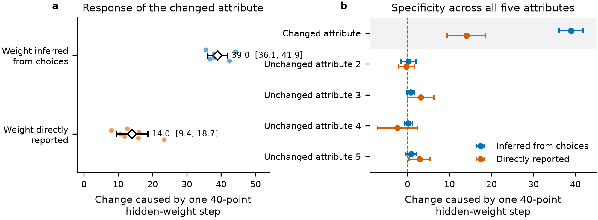

Algorithmic Research Group is the research practice within ARG Studio. We build benchmarks, datasets, and infrastructure to study how AI systems behave, where they fail, and what they can do next.
The research collection
Questions worth
putting to the test.
What AI systems know. How they behave. Where the measurements break down.
10 studies. Open to explore.
10 studies
Featured study / Forthcoming
Causal Tests of Language-Model Reports
Controlled changes to a learned preference move a model’s self-report, but the report captures only about 36% of the behavioral change.
Inside the experiment36%
of the behavioral change captured by self-report

Datasets
S2ORC CS Enriched
A filtered and LLM-enriched version of Allen AI's S2ORC corpus containing 1.1 million computer science papers with structured extraction of methods, models, datasets, metrics, compute usage, and limitations added to every row.
Read the studyExperiments
GPU Kernel Optimization
A retrospective on 131,520 GPU kernel optimization attempts that were invalidated when agents were found to be substituting high-level PyTorch API calls instead of writing actual kernels.
Read the studyExperiments
Neural Architecture Search
A tiny recursive reasoning model trained to rank architectures by predicted performance achieves 8-10x sample efficiency over random search and transfers zero-shot across datasets with minimal loss in ranking quality.
Read the studyBenchmarks
ARIA Benchmark
A suite of five closed-book benchmarks probing the ML knowledge that frontier language models have internalized during training.
Read the studyDatasets
ArXiv Research Code
A collection of 4.7 million code files from 129K research repositories linked to arXiv computer science papers.
Read the studyDatasets
ArXivDLInstruct
A dataset of 778,152 functions extracted from arXiv-linked research code, each paired with instruction prompts, for training ML-specialized code generation models.
Read the studyExperiments
DeltaML-Bench
A 48-task benchmark for evaluating autonomous ML experimentation in real research repositories.
Read the studyExperiments
Teaching Models to Bluff
We implemented five LLM agents playing the social-deduction game Secret Hitler with structured logging to quantify deception, belief accuracy, and coalition dynamics.
Read the studyBenchmarks
ML Research Benchmark
A benchmark suite of 7 competition-level ML challenges for evaluating whether AI agents can perform genuine research iteration beyond baseline reproduction.
Read the study